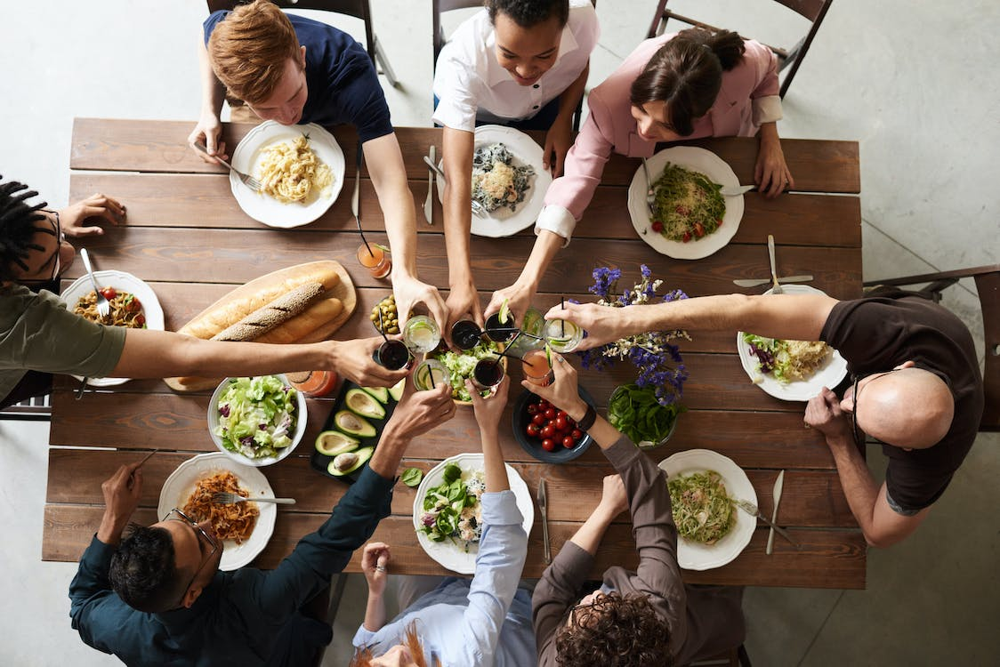

What Has Happened?
This last winter in Texas was one of the worst experiences our state has ever experienced. Thousands were left without food, water, and power due to ice storms and severe winter weather. Power grids went down due to overuse and poor management. Food shortages occurred at local grocery stores since the public was in a panic and delivery trucks were halted because of icy roads. People were starving and freezing in their own homes. It is our intention to build an online community that discusses the importance of food supply and emergency preparedness kits. We will have information on the best products available, as well as blogs for communication, response times, testimonials, and a support system for those affected.
Our Task
We invite all who wish to make a difference in our great state to like and share our services. We also want to invite our local community leadership to take part in the discussion, including our state representatives. We're all brothers and sisters in this beautiful world- it's our sacred duty to look after one another. If one of us is suffering, we all suffer. With one heart and one mind, we can ensure that our fellow man's suffering can be put at ease. Gather, give, and uplift those who have lost their livelihood from this past traumatic experience. Be the change you wish to see in the world.
